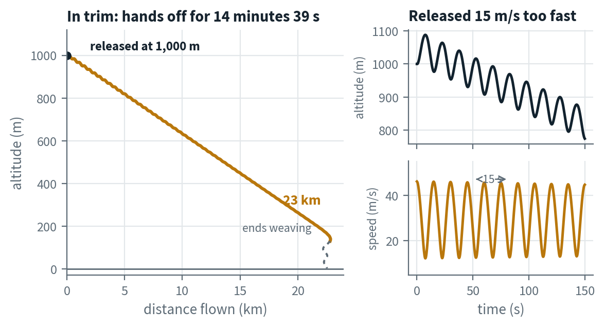
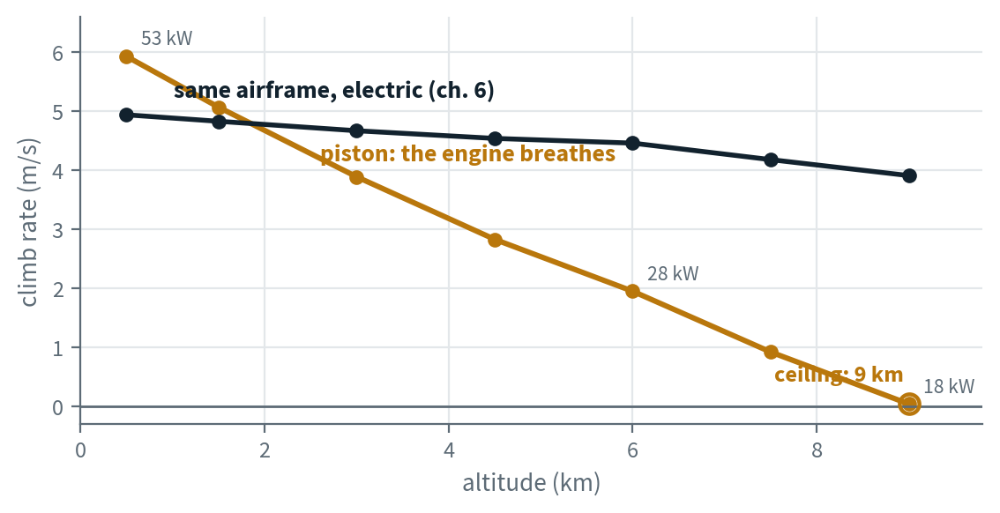
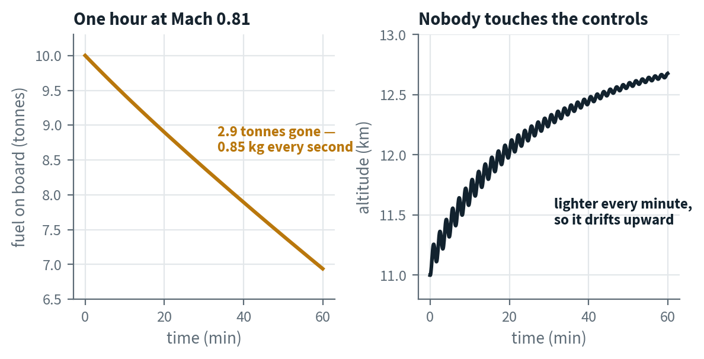
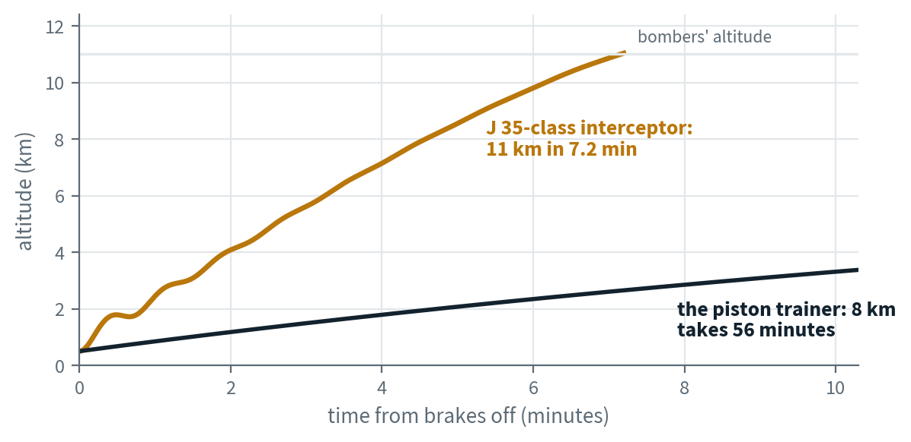
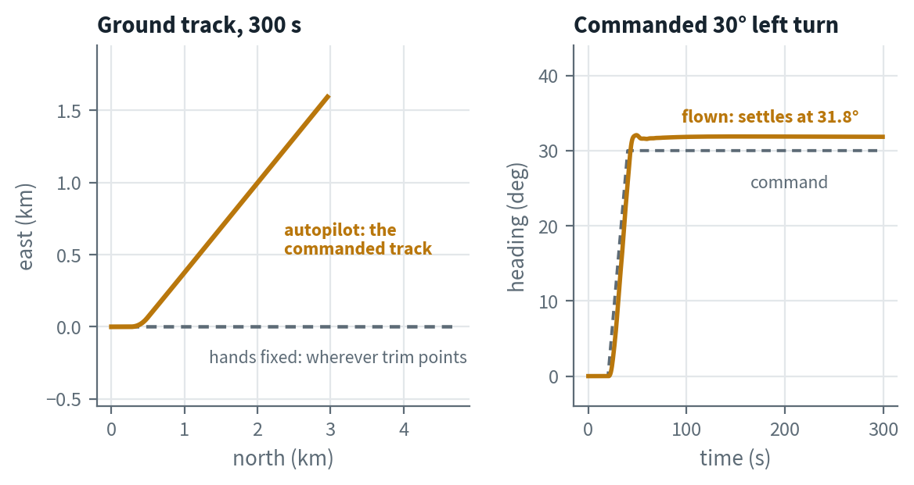
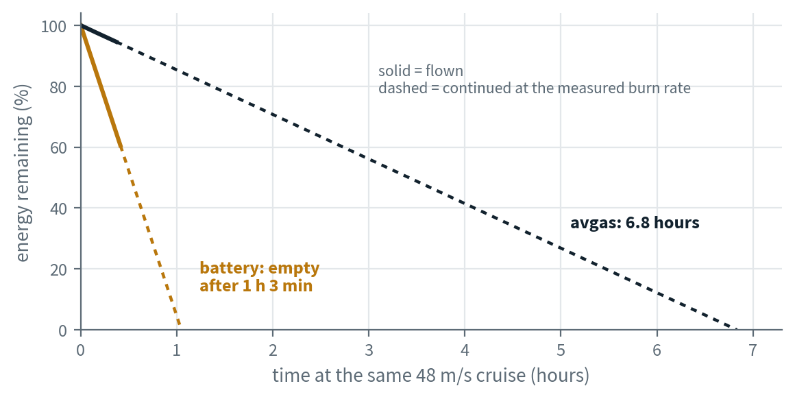
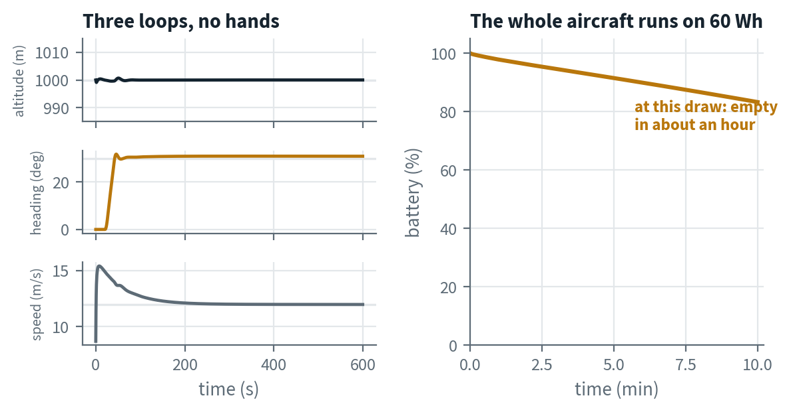

The Swedish Air Force turns 100 this weekend, and the
air show in Linköping is themed past, present and future.
Let's see how we got here.
Ankit Naik · Thinking in Systems · August 2026
· Download PDF
The 60-second version
If you read nothing else
The idea. Fly the century in order, one simulation per era:
a glider, a piston trainer, a jet airliner, an interceptor, an autopilot, an
electric trainer and a drone.
The pattern. Each aircraft fixes the biggest problem of the
one before it, and brings a new problem of its own. That handover, repeated seven
times, is the whole century.
The numbers are real. Every figure in this book comes out of
the simulations — the same models, flown, measured and plotted.
Why now. The show's future segment is drones and satellites:
aircraft that get designed and tested in simulation before any metal is cut.
This book is a small taste of how that works.
25
Metres forward per metre of height — what a glider does with no engine at all
≈70×
Energy per kilogram: avgas vs the battery in the same airframe
7.2 min
The interceptor's climb to 11 km — the piston trainer needs 56 minutes to reach 8
So what
The glider had no engine. The piston engine ran out of air. The jet fixed
that and ran out of fuel instead. The interceptor bought speed and got minutes
of it. The autopilot took over the hands. The battery brought back the oldest
problem — energy. And the drone removed the pilot. Seven aircraft, seven
problems, one century. That's how we got here.
Chapter 1 · 1900s–1920s
01 Altitude is the only fuel
A hundred years ago you flew by borrowing height: Lilienthal
ran off hills, the Wrights glided from dunes, the 1920s clubs bungeed
gliders off hilltops. I released one in simulation at 1,000 m and let the
stick go.
Released
Glide speed
Sink
Stays up
Reaches
In trim, 31 m/s
29 m/s steady
1.1 m/s
14 min 39 s
23.1 km
15 m/s too fast
swings 12–46 m/s
—
porpoises every 15 s, height swinging ±90 m
The glider is a Schweizer SGS 1-36 — a 1980 design, but the deal it flies is the era's: height in, distance out. Trimmed right it flies itself, 25 m forward for every metre of height.
Released too fast, it porpoises: climbs, slows, dives, speeds up, climbs again, every 15 seconds. Gliders do this on their own; the pattern is called the phugoid.
Either way it ends on the ground — height is the only fuel. That's what an engine fixes.

Figure 1. The same glider released twice — one in trim, one 15 m/s too fast.Chapter 2 · 1930s–1940s
02 The engine breathes
So we bolted on an engine. A 60 kW piston on the same class of
light airframe, and suddenly height is something you can buy back. Until the
air runs thin.
Full throttle from 500 m, the trainer climbs at 5.9 m/s.
But a piston engine breathes the same air the wing flies in. Climb higher, the air gets thinner, and the engine gets weaker with it.
By 4,000 m half the climb is gone. At 9,000 m the engine is down to 18 kW — just enough to pay the drag bill, with nothing left to climb on. That's the ceiling.

Figure 2. Climb rate measured in short sawtooth segments, the flight-test way. The piston line dies almost linearly with air density — 53 kW near sea level, 18 kW at the 9 km ceiling. The dark line is the same airframe with an electric motor, which doesn't breathe; it waits in chapter 6.
The era's limit
A bigger engine doesn't help — it suffocates too. What helps is an
engine that carries its own air compressor and squeezes the thin air back into
something it can burn. That engine is a jet, and it's the next chapter.
Chapter 3 · 1950s–1960s
03 Thin air becomes the point
The jet's compressor feeds the engine no matter how thin the
air gets — and thin air has less drag, so up high is suddenly the best
place to be. I put a DC-8 with four turbojets at 11,000 m and Mach 0.82 and
left the controls alone.
2.9 t/h
Fuel burned holding Mach 0.81 — 0.85 kg every second
876 km/h
Ground covered per hour — the glider's whole flight, every 95 seconds
42 s
How often it burns the little Alpha's entire 36 kg fuel load

Figure 3. One simulated hour at 11 km, controls untouched. The tanks drain 2.9 tonnes; the aircraft, lighter every minute, drifts 1.7 km upward — the cruise-climb real DC-8s flew on purpose.
It cruises happily where the piston engine died, covering the glider's whole flight every 95 seconds.
The new problems: three tonnes of fuel an hour — and watch the altitude trace: nobody is holding it, so it porpoises for the whole hour. Something has to fly it.
Chapter 4 · 1950s–1970s
04 Climb becomes a weapon
For 1950s Sweden the problem was time: unknown aircraft over
the Baltic at 11,000 m, and only minutes to meet them. That job shaped the
J 35 Draken. I scrambled a Draken-class delta — 49 m² of wing,
78 kN of afterburning turbojet — from 500 m.
7.2 min
From 500 m to the bombers' 11,000 m
12×
Faster to 8 km than the piston trainer of chapter 2
30%
Of its internal fuel burned just getting up there

Figure 4. The scramble, flown at a 230 m/s climb schedule
(a speed-hold pitch loop stands in for the pilot, as the wing leveler does in
roll). The piston trainer's whole 56-minute struggle to 8 km fits under the
first bend of the Draken's curve.
The speed costs twice: thin delta wings hold little fuel, and the afterburner burns 1.3 kg of it every second. Reaching the bombers eats 30% of the tank.
So the interceptor lives on minutes — of fuel, and of one very busy pilot doing intercept sums at nine kilometres a minute. Both problems have the same fix: hand some of the flying to a machine.
Chapter 5 · 1960s–1990s
05 The hands come off
An autopilot is a smaller thing than it sounds: three simple
control loops, each reading one sensor and moving one control surface. I gave
the chapter-1 glider a set and asked for a 30° left turn.
It rolls in, flies the turn, and holds the new heading within two degrees for the rest of the flight. It never gets bored and never drifts off.
With the stick fixed instead, the same aircraft just goes wherever its trim points — and eventually starts weaving, the way the glider did at the end of chapter 1.
This is what fixed the DC-8's hour of porpoising and the interceptor pilot's overload: not more skill, just patience made of feedback.

Figure 5. The same glider as chapter 1, now flown by its autopilot. Commanded 30°, it settles at 31.8° and rules a dead-straight line across the sky; the dashed track is the hands-fixed aircraft.
The autopilot didn't replace the pilot. It replaced the pilot's
patience.
— what three PID loops actually buy
Chapter 6 · 2010s–today
06 The fuel problem returns
Pipistrel sells the same little two-seater twice: the Alpha
Trainer burns petrol, the Alpha Electro carries a battery. Same wings, same
weight. I flew both at the same speed and watched the energy drain.
Same airframe
Energy on board
Endurance
Lands
Alpha Trainer · 36 kg avgas
≈1,570 MJ
6 h 50 min
36 kg lighter
Alpha Electro · 22 kWh battery
79 MJ
1 h 3 min
same weight it took off at

Figure 6. Both aircraft at the same 48 m/s cruise — solid where flown, dashed continuing at the measured burn rate.
A kilogram of petrol holds about 70 times more energy than a kilogram of this battery. The motor is far more efficient, which claws some back — but the petrol plane still flies 6.8 hours to the battery's one.
The motor has one trick no piston ever had: it doesn't breathe. At 9,000 m, where chapter 2's climb died, the electric version is still climbing at 3.9 m/s (figure 2). A hundred years on, the glider's arithmetic is back — the flight is a countdown of the energy you took off with.
Chapter 7 · 2020s →
07 Remove the pilot
The last aircraft weighs a few kilograms and nobody is aboard.
Its battery holds 60 Wh — about a laptop's worth — and an autopilot
flies the whole mission.
Told to hold 1,000 m, turn 30° and keep 12 m/s, it does exactly that — altitude within half a metre, heading within a third of a degree — until the battery runs out, about an hour later.
It is chapter 5's autopilot plus one more loop, the throttle. Close that last loop and the pilot can stay home.
That's the air show's future segment — drones and satellites. Once the pilot is software, the aircraft can be any size the mission needs.

Figure 7. The whole mission, unmanned: altitude, heading and speed each pinned to its commanded value by its own loop, while the 60 Wh battery drains at about 1% a minute. The pilot isn't missing — the pilot is the left-hand column.
The takeaway
Every era flies on the last era's limitation.
No engine, so we borrowed height. An engine, but it needed air. A compressor,
but it drank. Speed, but only for minutes. Feedback loops to hold the course.
A battery, and the old arithmetic came back. And at last, no pilot at all.
Every aircraft flying at Malmen this weekend is one of these answers, over the
field where the questions started.
Each era's aircraft is the answer to the era before it.
All seven flew from one component library — the century fits in a parts bin.
Happy 100th, Flygvapnet. The next hundred years will fly here first — in simulation.
Every number in this study comes from a six-degree-of-freedom
flight simulation in Wolfram System Modeler, using one Modelica aircraft
library. Read the limits before trusting the conclusions.
The aircraft are calibrated replicas, not certified models. The glider and both Alphas trace to published data of real aircraft; the DC-8 and the J 35-class delta carry known simplifications (an unswept wing on one, elevons modeled as a small tail surface on the other), so treat their numbers as era-typical, not type-accurate.
Hands-fixed flight is eventually unstable in roll, as it is in reality — even the trimmed glider ends its 15-minute flight weaving. Powered scenarios add one proportional bank-to-aileron feedback, a wing leveler standing in for the pilot's lateral corrections; the interceptor also carries a proportional speed-hold pitch loop, the climb schedule a pilot would fly. The glider chapters fly genuinely hands-off.
Piston vs electric endurance compares the model pair as built: same airframe, same takeoff mass, cruise at the same speed and altitude. Battery mass is inside the airframe's fixed mass; fuel mass genuinely burns off. The 70× energy-per-kilogram figure uses the real Alpha Electro pack's published ≈126 kg, not a model quantity.
Engine fidelity is deliberately one equation per era — a density lapse for the piston, a Mach/altitude map for the turbojet, an efficiency chain for the electric motor. That is enough for ceilings and endurance, not for detailed performance charts.
Climb and endurance use flight-test method, not marathon runs. Climb rate comes from short sawtooth segments at each altitude; endurance from the measured steady cruise burn rate. The DC-8 additionally needed a large fixed trim deflection, a consequence of its documented undersized elevator.
How it was built
Airframes, engines, sensors and autopilots from the FixedWing Modelica library; scenarios assembled as small top-level models.
Simulated in Wolfram System Modeler (DASSL), compiled and run headlessly through its kernel; plots and analysis from the raw result trajectories.
Atmosphere: US Standard Atmosphere 1976 throughout.
Engine lapse laws: Gagg-Ferrar (piston), σ0.7 (turboprop reference), thrust-ratio map at the design point (turbojet).